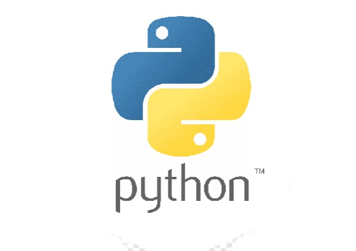
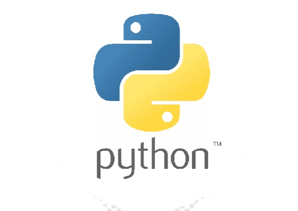

Selected Publications
Book Chapters
[b1] W. J. Gross, N. Doan, E. Ngomseu Mambou, and S. A. Hashemi,
"Deep Learning Techniques for Decoding Polar Codes"
,
Wiley, 2019.
(online,
poster)
Journal Papers
[j4] E. Ngomseu Mambou, J. M. Moualeu and T. G. Swart,
"A new class of DC-free run-length limited codes".
(manuscript under preparation)
[j3] E. Ngomseu Mambou, T. Tonnellier and W. J. Gross,
"Improved DC-free run-length limited 4B6B codes for concatenated schemes",
IEEE Access, 2022. (online)
[j2] E. Ngomseu Mambou, E. Esenogho and H. C. Ferreira,
"Improving the redundancy of Knuth's balancing scheme for packet transmission systems",
Turkish Journal of Electrical & Computer Sciences,
27(4), 2019.
(online)
[j1] E. Ngomseu Mambou and T. G. Swart,
"A construction for balancing non-binary sequences based on Gray code prefixes"
,
IEEE Transactions on Information Theory,
64(8), 2017.
(online)
Conference Papers
[c8] E. Ngomseu Mambou, T. Tonnellier and W. J. Gross,
"Improved dimming scheme based on non-DC free RLL codes for VLC",
IEEE International Symposium on Topics in Coding (ISTC)
,
Montreal, QC, Canada, 2021.
[c7] E. Ngomseu Mambou, T. Tonnellier, S. A. Hashemi and W. J. Gross,
"Efficient flicker-free FEC codes using Knuth's balancing algorithm for VLC",
IEEE Global Communications Conference (GLOBECOM),
,
Waikoloa, HI, USA, 2019.
(online, talk)
[c6] N. Doan, S. A. Hashemi, E. Ngomseu Mambou, T. Tonnellier, W. J. Gross,
"Neural Belief Propagation Decoding of CRC-Polar Concatenated Codes",
IEEE International Conference on Communications (ICC),
Shanghai, China, 2019.
(online,
talk)
[c5] E. Ngomseu Mambou and T. G. Swart,
"Construction of q-ary constant weight sequences using a Knuth-like approach",
IEEE International Symposium of Information Theory (ISIT)
,
Aachen, Germany, 2017.
(online, talk)
[c4] E. Ngomseu Mambou ,G. M. Yamga, J. Meyer and H. C. Ferreira,
"Development of a helium gas balloon flying system for aerial photographing and observation",
IEEE International Conference on Communications Software and Networks (ICCSN)
,
Beijing, China, 2016.
(online, talk)
[c3] E. Ngomseu Mambou and T. G. Swart,
"Encoding and decoding of balanced q-ary sequences using a Gray code prefix",
IEEE International Symposium of Information Theory (ISIT)
,
Barcelona, Spain, 2016.
(online, talk)
[c2] E. Ngomseu Mambou, S. M. Nlom, T. G. Swart, K. Ouahada, A. R. Ndjioungue and H. C. Ferreira,
"Monitoring of the medication distribution and the refrigeration temperature in a pharmacy based on internet of things (IoT) technology",
IEEE Mediterranean Electrotechnical Conference (MELECON),
Lemesos, Cyprus, 2016.
(online, poster)
[c1] E. Ngomseu Mambou, T. G. Swart, A. R. Ndjiongue and W. A. Clarke,
"Design and implementation of a real-time tracking and telemetry system for a solar car"
,
IEEE AFRICON,
Addis Ababa, Ethiopia, 2015.
(online, poster)


 
